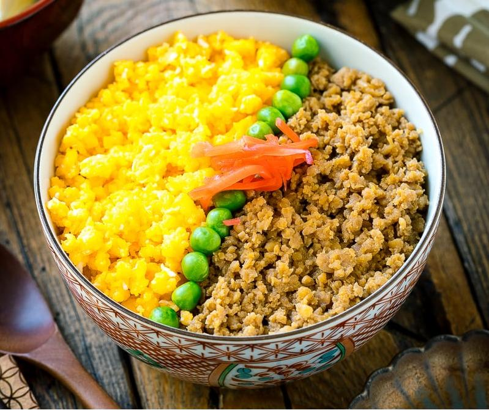

Soboro Don

A delicious Japanese ground chicken recipe,
this dish mixes together a variety of ingredients to make ground chicken absorb the flavors and create a sweet batch of meat, complimenting any rice bowl.
Ingredients:
- 1/2lb Ground chicken
- 1 Tbsp Mirin (rice wine)
- 2 Tbsp Soy Sauce
- 1 Tbsp Sugar
- 1 Tbsp Sake
Steps:
- In a medium pot, put together ground chicken, sugar, Soy Sauce, Mirin, and Sake.
- At medium heat, cook chicken stirring constantly.
- Once the sauce has evaporated, add chicken to steamed rice and serve.
- (Optional:) Add scrambled eggs or steamed vegetables for extra variety!